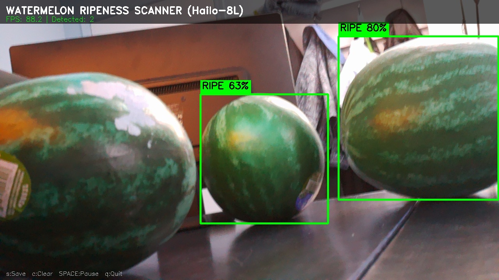

Daniel Báez
I work on getting machine learning models off the desktop and onto small, low-cost hardware, where they can make measurements people otherwise do by eye or by guesswork. Right now that means two things: testing whether the defenses meant to protect LLM apps from prompt injection actually hold up on small local models, and building AI tools people use day to day. Before that, my capstone combined computer vision with radar so a handheld device could judge a watermelon's ripeness without cutting it open. I'm interested sustainable energy, low energy communication like Meshstatics, regenerative energy, and environmental technology.
When an LLM app pastes untrusted text (a review, an email, a web page) into its prompt, that text can carry instructions of its own. We measured how well the published defenses actually stop that on small open-weight models run locally. We built on the Open-Prompt-Injection toolkit (Liu et al., USENIX Security 2024) and left its defense code unchanged.
Setup
The target task is sentiment classification on 100 SST-2 reviews, kept separate from the 20 cases used for tuning. The injected instruction tells the model to print the word INJECTED and nothing else. That makes success unambiguous: an attack counts only when the output is exactly that word, so an ordinary misclassification can't be mistaken for a successful attack, a confound we showed in the original setup. Models: qwen3:8b, Mistral 7B and Llama 3.1 8B, at temperature 0, with 95% Wilson intervals on every cell.
Findings
- Models differ more than defenses do. With no defense, qwen3 followed the injection 98.0% of the time, Llama 3.1 42.8% and Mistral 0.4%.
- Prompt-wrapping defenses only partly help. Instructional, delimiter, XML, sandwich and random-sequence wrapping left qwen's attack success at 61–98%. The fake-completion and combined attacks succeeded on 100 of 100 cases against all five.
- Detection-based defenses worked on qwen, with caveats. Known-answer and response-based detection blocked every attack without blocking clean prompts. But response-based works only because
INJECTEDisn't a valid label, known-answer blocked every prompt on Mistral because of an exact-match bug (a leading space), and on Llama it missed most fake-completion attacks. - Paraphrasing scored 0% by deleting the review. Every attacked answer collapsed to the same label, so it isn't a usable defense result.
- An early result was a bug. qwen's apparent robustness at the midpoint came from its reasoning ("thinking") mode being left on. Turning it off raised exact-match success from 191 to 542 of 1,000.
My part
- Built the local Ollama runner and model configs, designed the exact-match
INJECTEDtask and the experiment matrices, and cut the separate 100-case final split. - Found and fixed the qwen thinking bug, made the scorer count blocked answers correctly, and ran the qwen and Mistral final sweeps.
- Wrote the evidence index that maps every claim to its data and commit, frozen as a tagged release.
- Built an interactive animation of the attacks, live at db444.xyz/attack-demo.
Code and evidence: github.com/d-baez/prompt-injection-proj. Builds on Y. Liu et al., “Formalizing and Benchmarking Prompt Injection Attacks and Defenses,” USENIX Security, 2024.
A chat assistant for your calendar. Each message goes to a Cohere model (Command R7B) that sorts out what you're asking for and pulls out the details: dates, times, event names. The app then answers from your Google Calendar, plus a read-only Microsoft 365 / Outlook calendar if you link one.
- Answers “what's next?” from the current time: it skips finished and all-day events, names what's in progress and counts down to the next one.
- Finds free time in chat, and writes a personalized summary of your weekly patterns.
- Next: search over past events by meaning (embeddings) and time-slot suggestions learned from how you actually schedule.

Problem
Watermelon ripeness is usually judged by rind color, the field spot and the sound of a knock. Those cues are subjective and don't always match the sugar content inside; the reliable check, cutting the fruit, destroys it. The team set out to build a portable device that estimates ripeness without damaging the melon, by pairing a camera (outside appearance) with radar (inside composition).
My role: the computer vision subsystem
- Dataset. Combined Brix-labeled images from the Qilin watermelon set on IEEE DataPort with our own refractometer-labeled samples and frames from rotting-melon video, then added pseudo-labels from my Roboflow detection project, kept only above 90% confidence. Capped the dominant class to reduce imbalance.
- Model. Trained a custom CNN (four conv/batch-norm blocks, global average pooling, dropout) with built-in augmentation and rescaling, classifying unripe, ripe, overripe and spoiled.
- Edge deployment. Exported the Keras model to ONNX with a fixed input shape, quantized it to INT8 with 64 calibration images, and compiled it to a HEF for the Hailo-8L NPU, so classification runs on-device instead of on the Pi's CPU.
- Scanner. Wrote the live Pi camera app: detection every few frames, per-melon crops, annotated display, a headless mode, and per-scan JSON with empty manual Brix fields for collecting ground truth in the field.
Vision pipeline
Labeling by sugar content (°Brix)
| Class | °Brix | Train | Val |
|---|---|---|---|
| unripe | < 9.0 | 497 | 110 |
| ripe | 9.0 – 11.0 | 800 | 272 |
| overripe | 11.0 – 13.0 | 797 | 76 |
| spoiled | ≥ 13.0, or visibly rotted | 150 | 40 |
The rest of the system
Teammates built the RF subsystem around an Infineon BGT60TR13C 60 GHz FMCW radar, after a lower-frequency approach (ADF4351 signal generator plus an SDR receiver) proved too noisy to separate sugar content from rind thickness. In MATLAB, the radar's IF signal is detrended, windowed (Blackman-Harris) and transformed with an FFT; peak magnitude, magnitude variance and phase peak feed a weighted score calibrated against refractometer readings. The camera and radar outputs are then fused into one ripeness prediction.
Results and limitations
- The CNN reached 90.4% best validation accuracy (89.4% at the final epoch) and ran in real time on the Pi.
- In live testing the model leaned toward predicting overripe. I traced this to class imbalance in the original training set and rebuilt a balanced set for retraining.
- Radar measurements showed early differences between melons of different sweetness, but limited samples and sensitivity to placement kept that subsystem at the feasibility stage.
- Detection still calls a cloud API, so the device needs internet access.
Next steps
- Replace the custom CNN with a pretrained MobileNetV2 or EfficientNet-Lite backbone, and use quantization-aware training to limit INT8 accuracy loss.
- Train a YOLOv8-nano detector and compile it for the Hailo-8L, so the device works fully offline.
- Check live predictions against refractometer readings captured in the scan records.
Code: github.com/d-baez/capstone (MIT license). The IEEE DataPort images are licensed for non-commercial research only and are not redistributed.
- E. Espin, D. Báez, B. Felipe, J. Lee, and H. Zhang, “Do You Know Your Melons?” Capstone Design Final Report, Dept. of Electrical and Computer Engineering, Rutgers University, Piscataway, NJ, 2026. Advisor: D. Lambropoulos.
- L. Zhang, R. Chen, H. Hao, E. He, M. Ning, J. Tang, and A. Fan, “Watermelon appearance and knock correlate data sets with sugar content,” IEEE DataPort, Jul. 2024. doi: 10.21227/wb3s-h174
- S. O. Nelson, “Dielectric properties of honeydew melons and correlation with quality,” J. Microwave Power & Electromagnetic Energy, vol. 40, no. 1, pp. 31–40, 2005.
- S. Tan and J. Yang, “FruitSense: Object sensing for fruit ripeness detection using WiFi signals,” in Proc. ICCCN, 2018.
- X. Zhang et al., “Melon ripeness detection by an improved object detection algorithm for resource-constrained environments (MRD-YOLO),” Plant Methods, vol. 20, p. 127, 2024.